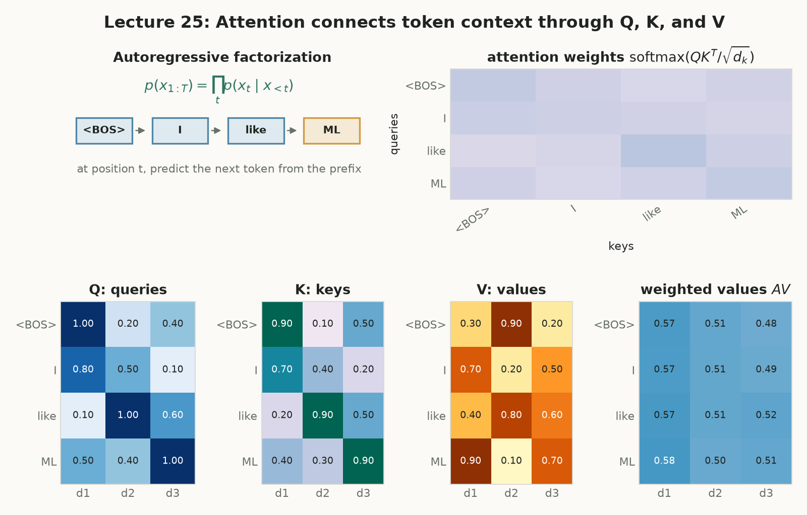
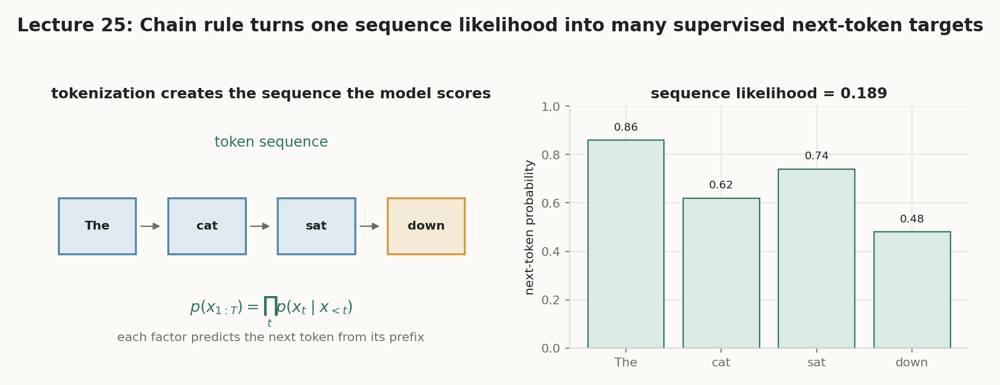
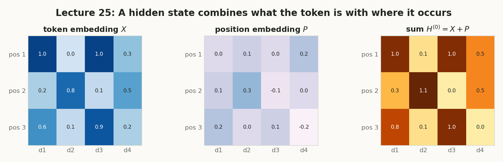
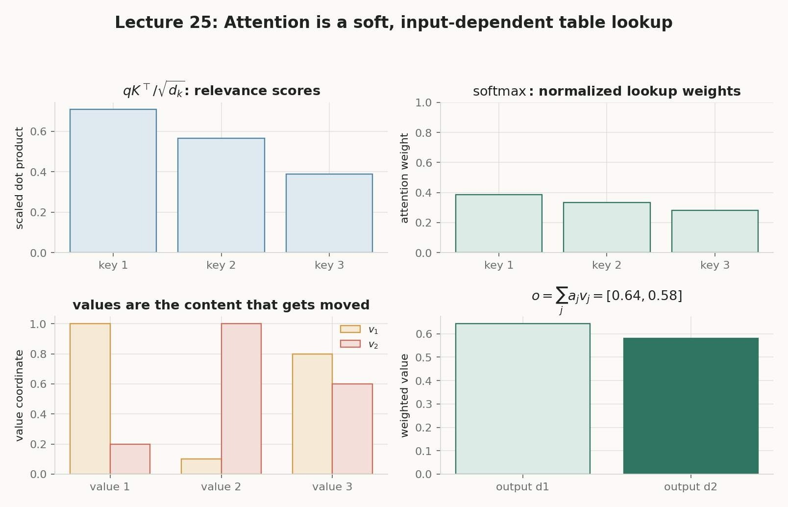
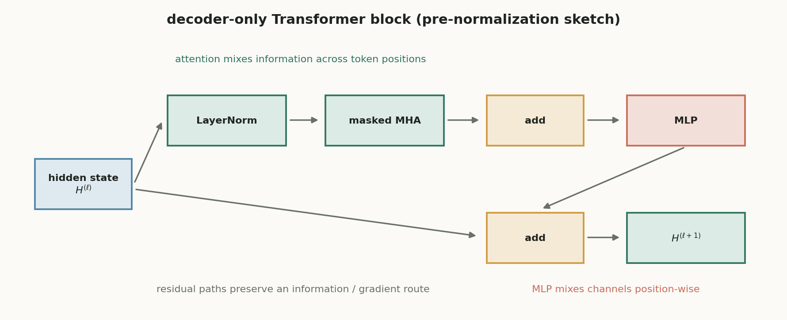
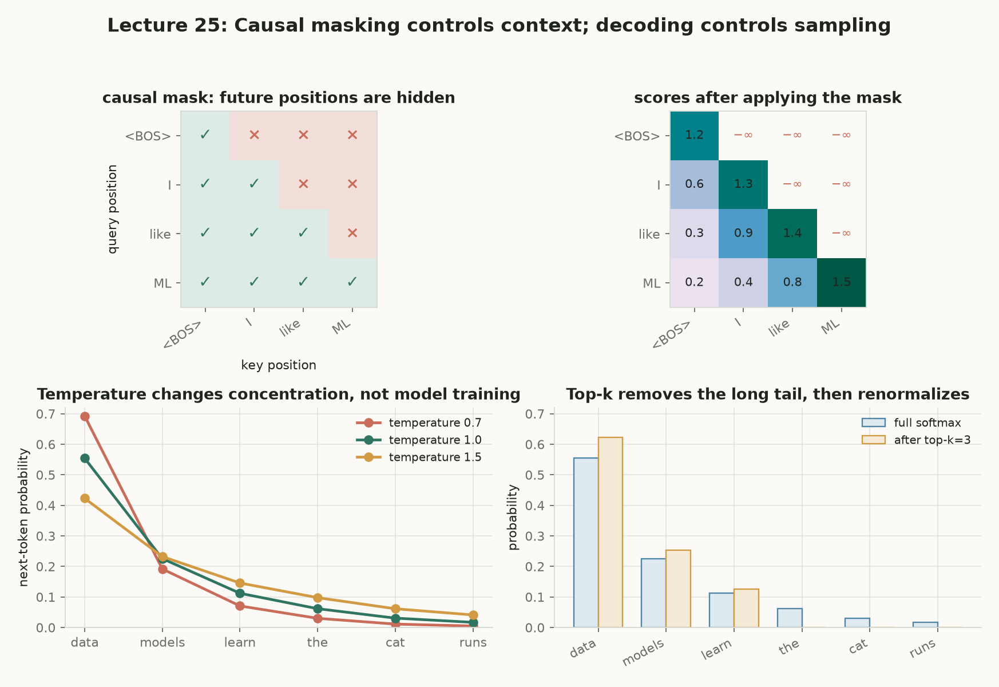
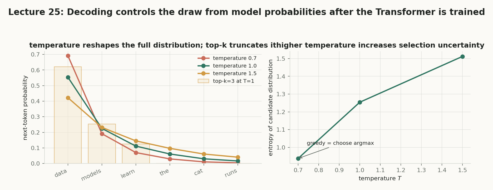

第 25 讲 · 互动附属页（收官讲）
大语言模型（Large Language Models）
第 22–24 讲用潜变量和 EM 做概率建模；本讲把同一套概率语言搬到离散 token 序列上：用 chain rule 把整句概率精确拆成“预测下一个 token”，用 cross-entropy 自监督训练，用 embedding 与 causal attention 构造表示，最后再分清“模型概率、decoding 选择、生成文本”这三件不同的事。
文本 → 概率分布 → 文本
把句子写成 categorical token 序列；学习每个位置的 next-token 分布；生成时再用 decoding 规则把分布变回文本。
LLM 只是把“预测下一个 token”做到极致
理解这一步就理解了训练目标、因果掩码与生成接口各自的职责——它们经常被混为一谈。
拆概率 → 算损失 → 造表示 → 做选择
chain rule 拆任务，cross-entropy 给目标，embedding + attention 造表示，logits 经 decoding 变成词。
概念地图：点击节点跳到对应小节
实线是核心路径；紫色节点属于拓展。箭头从方块边界出发，在另一方块边界结束，避免穿过节点。

核心1. 先把语言写成随机变量
实际送入模型的单位不是完整单词，而是 token：一个单词、词的一部分、标点或特殊符号都可能是一个 token。把一句话写成 $X_{1:T}=(X_1,\ldots,X_T)$，每个 $X_t\in\{1,2,\ldots,V\}$ 都是 categorical 随机变量；小写 $x_t$ 是它的一次实际观测。
是什么
token 是送入模型的离散单位；词表 $\mathcal V$ 是所有可输出 token 的有限集合，大小记为 $V$；每个位置是一个 categorical variable：取有限个类别值、每个类别各带一个概率的离散随机变量，像掷一个 $V$ 面的不均匀骰子。
白话理解
词表像一本字典，token id 只是字典里的页码——编号 17 不比编号 3 “更大”或“更接近”。
干嘛用
把“文本”翻译成概率论能处理的对象：有限类别上的离散随机变量序列。
怎么算
小词表 $\mathcal V=\{\text{猫},\text{狗},\text{跑}\}$ 中，序列“猫 跑”记为 $(1,3)$；但模型关心的是事件 $P(X_1=\text{猫},X_2=\text{跑})$，不是数字 1 和 3 的算术关系。
为什么重要
id 无语义意味着必须靠 embedding 学表示（第 4 节）；联合表 $V^T$ 爆炸意味着必须靠 chain rule 拆任务（第 2 节）。
为什么不能直接记住整个联合分布？可能的序列数是
$$\#\{\text{序列}\}=V^T.$$
$V$ 是词表大小、$T$ 是序列长度。即使每项概率只占 8 字节，这个表也随 $T$ 指数增长。问题不是“概率论不能描述文本”，而是朴素联合表没有利用序列里的重复结构。
$V$ 的滑杆控制 $\log_{10}V$，输出框显示 $V$ 本身。下方所有数字现算：默认 $V=2,T=4$ 时有 $2^4=16$ 个序列；把 $V$ 拖到 $50{,}000$、$T$ 拖到 $1000$，看指数爆炸到什么量级。
读图：对数刻度尺上，$V^T$ 的位数与“可观测宇宙原子数约 $10^{80}$”并排比较——超过它之后，任何逐枚举行列的物理存储都无从谈起。
核心2. Chain rule：把一个难问题拆成许多个下一个 token
概率乘法规则给出精确恒等式——不是近似，也不是独立性假设（这是常见误区）：逐步按条件概率定义代回即可。生成也随之变得直接：从 $P(x_1)$ 抽样，观察到 $x_1$ 后从 $P(x_2\mid x_1)$ 抽样，如此循环。
是什么
chain rule：$P(x_{1:T})=\prod_{t=1}^{T}P(x_t\mid x_{1:t-1})$；autoregressive 指用已出现的前缀预测下一个 token；context length $k$ 是工程截断。
白话理解
不必一次猜完整句话；每次都只看已经写下的开头，猜下一个字。
干嘛用
把一个 $V^T$ 的联合表，换成每个位置一个 $V$ 类条件分布——存储与计算才可思议。
怎么算
截断近似写作 $P(x_t\mid x_{1:t-1})\approx P(x_t\mid x_{\max(1,t-k):t-1})$；$k\ge T-1$ 时小例子里能看到全部前文。
为什么重要
chain rule 本身精确；近似的只是有限 context length $k$——容量、显存与计算量的工程折衷。注意这里的 $k$ 是上下文长度，与后面 attention 的 key 向量 $k_j$、第 22–24 讲的组件数 $K$ 都是不同对象。
chain rule 的推导（逐步代回，每步只用条件概率定义 $P(A,B)=P(A)\,P(B\mid A)$）：
$$P(x_1,x_2)=P(x_1)\,P(x_2\mid x_1),$$
$$P(x_{1:3})=P(x_{1:2})\,P(x_3\mid x_{1:2})=P(x_1)\,P(x_2\mid x_1)\,P(x_3\mid x_{1:2}),$$
$$P(x_{1:4})=P(x_{1:3})\,P(x_4\mid x_{1:3})=\cdots$$
每次把上一步的结果代回去，归纳到 $T$ 就得到下面的完整分解。全程没有丢掉任何依赖关系——所以它是恒等式，而不是“假设各 token 独立”。
训练对齐（shifted setup）：令 $x_0=\langle\mathrm{BOS}\rangle$（beginning of sequence，一个不来自真实文本的起始符，为第一个位置提供空上下文占位；$x_{1:0}$ 也记空上下文），输入是左移前缀 $x_{0:T-1}$，标签是右移一位的 $x_{1:T}$：
$$P(x_{1:T})=P(x_1)\,P(x_2\mid x_1)\,P(x_3\mid x_{1:2})\cdots P(x_T\mid x_{1:T-1})=\prod_{t=1}^{T}P(x_t\mid x_{1:t-1}).$$
编号预告：张量行号 $r=1..T$，零起点位置 $t=r-1\in\{0,\ldots,T-1\}$——输入位置 $t$ 的输出专门预测 $x_{t+1}$；后文 attention 数值例用行号 $i=1,2,3$。两者只是相差 1 的编号习惯，不代表多出一个 token。
每个位置的输出不是一个词，而是词表上的一整个分布：网络先给出未归一化分数 logits $\boldsymbol z_t\in\mathbb R^V$（$V$ 个任意实数，可正可负），再由 softmax 归一化成概率：
$$p_{t,v}=\operatorname{softmax}(\boldsymbol z_t)_v=\frac{\exp(z_{t,v})}{\sum_{u=1}^{V}\exp(z_{t,u})},\qquad \sum_{v=1}^{V}p_{t,v}=1.$$
$\exp$ 把任意实数变成正数并拉开差距，除以总和后各项非负且和为 $1$——这就是“分布”的含义。注意 $\boldsymbol p_t$ 只是模型对“下一步是什么”的看法，还没有决定要选哪一个 token；选择是第 7 节 decoding 的事。
小词表 $\mathcal V=\{\text{猫},\text{狗},\text{跑}\}$ 的手工三元模型，条件概率表内置且每行归一化。按钮真用 Math.random() 按 chain rule 逐位抽样，连点结果不同。$k=2=T-1$ 时用完整前文 $P(x_3\mid x_1,x_2)$；$k=1$ 时展示截断近似 $P(x_3\mid x_2)$（由全表精确边缘化现算，二者数值不同）。

核心3. 自监督 next-token 训练与 cross-entropy
训练数据不需要人工标签：目标 token 已经存在于原文里。输入 $x_{0:T-1}$，标签是整体右移一位的 $x_{1:T}$——这就是 self-supervision。例如 $(\langle\mathrm{BOS}\rangle,\text{The},\text{cat},\text{sat},\text{down})$ 一次给出四个输入—标签对：BOS→The、BOS The→cat、BOS The cat→sat、BOS The cat sat→down。
是什么
cross-entropy 单位置写作 $\ell_t(\theta)=-\log p_\theta(x_{t+1}\mid x_{0:t})$；teacher forcing 指训练时直接喂真实前缀而非模型自己的预测。
白话理解
每个位置都是一道“看前缀猜下一个词”的题，答对的概率越高、损失越小；答案就在原文里。
干嘛用
把 chain rule 的乘积变成优化软件喜欢的最小化目标：取 $\log$ 变求和，乘 $-1$ 再除以有效目标数 $T$。
怎么算
$\mathcal L(\theta)=-\frac1T\sum_{t=0}^{T-1}\log p_\theta(x_{t+1}\mid x_{0:t})$；one-hot 写法的内层求和退化到同一项，二者是同一目标。
为什么重要
分母是有效目标 token 数（padding 用掩码 $m_{bt}\in\{0,1\}$ 排除），不是词表大小；teacher forcing 不等于偷看未来——causal mask 仍然生效。
推导链（每一步都是恒等变形）：
$$p_\theta(x_{1:T}\mid x_0)=\prod_{t=0}^{T-1}p_\theta(x_{t+1}\mid x_{0:t})\ \xrightarrow{\log\text{ 单调}}\ \log p_\theta=\sum_{t=0}^{T-1}\log p_\theta(x_{t+1}\mid x_{0:t})\ \xrightarrow{\times(-1),\ \div T}\ \mathcal L(\theta)=-\frac1T\sum_{t=0}^{T-1}\log p_\theta(x_{t+1}\mid x_{0:t}).$$
batch + padding 的通用写法：$\mathcal L(\theta)=-\dfrac{\sum_{b,t}m_{bt}\log p_\theta(x_{b,t+1}\mid x_{b,0:t})}{\sum_{b,t}m_{bt}}$。$B$ 是 batch 大小，$T_{\max}$ 是 padding 后的统一长度，$m_{bt}=1$ 表示该位置确有非 padding 目标。同一目标的 one-hot 写法是 $\mathcal L=-\frac1T\sum_{t}\sum_{v=1}^{V}y_{t+1,v}\log p_{t,v}$，其中 $y_{t+1,v}=\mathbf 1\{v=x_{t+1}\}$：内层 $V$ 项求和只有真实类别那一项为 $1$，于是退化为 $-\log p_{t,x_{t+1}}$——所以“交叉熵”与“自回归负对数似然”不是两个目标，只是同一个量的两种写法。
讲义 Worked example 1：词表 $\{A,B,C\}$，前缀 $x_0=A$，目标 $x_1=B$、$x_2=C$（注意标签是 $B,C$，不是输入 $A,B$）。拖动两个概率，看逐位置损失、总 NLL 与平均 cross-entropy 的现算结果。
核心4. 从 token 到可计算表示：embedding
token 编号是离散索引，不能做有意义的点积。可学习的 embedding 矩阵 $E\in\mathbb R^{V\times d_{\mathrm{model}}}$ 负责查表：第 $v$ 行 $E_{v,:}$ 是 token $v$ 的向量。再为每个位置加上位置向量，得到初始隐藏状态。
是什么
embedding：$E\in\mathbb R^{V\times d_{\mathrm{model}}}$ 的查表映射；positional embedding：$P\in\mathbb R^{T\times d_{\mathrm{model}}}$ 的位置向量。
白话理解
$E$ 回答“是什么”，$P$ 回答“在哪里”；同一个“猫”站在位置 2 和位置 5，$E$ 不变、$P$ 变。
干嘛用
把离散 id 变成 Transformer 能处理的连续矩阵 $H^{(0)}\in\mathbb R^{T\times d_{\mathrm{model}}}$。
怎么算
$(H_{\mathrm{tok}})_{r,:}=E_{x_{r-1},:}$（行号 $r$ 从 1 起、token 下标从 0 起，所以有 $r-1$），然后 $H^{(0)}=H_{\mathrm{tok}}+P$。
为什么重要
相加要求两者维度完全一致——不能把一个 $T$ 维位置编号直接加到 $d_{\mathrm{model}}$ 维 token 向量上。为什么需要 $P$？self-attention 的匹配只由内容点积决定，交换两个输入位置，输出只是跟着换位（置换等价）——没有 $P$，它分不清“猫追狗”和“狗追猫”。
讲义 Worked example 2：$d_{\mathrm{model}}=3$，$E_{\text{猫},:}=[1,0,1]$，$P_{2,:}=[0,2,-1]$。默认“猫 @ 位置 2”复现 $H^{(0)}_{2,:}=[1,2,0]$。同一 token 换位置：左组条形不变、中组变、和随之变。
形状速查（默认值对应自测题 3）：$E$、$P$、$H^{(0)}$ 与 batch 维 $B$ 下的查表结果，全部随滑杆现算。

核心5. Attention：Q/K/V、$\sqrt{d_k}$ 缩放与 causal mask
把 attention 想成由输入决定的软查表：当前位置提出 query，去匹配各位置的 key，最后把匹配上的 value 按权重加权搬运：$o_i=\sum_j a_{ij}v_j$，$a_{ij}\ge0$、$\sum_j a_{ij}=1$。三份投影都来自同一个 $H$：$Q=HW_Q$、$K=HW_K$、$V=HW_V$。
是什么
query 是“我想找什么”，key 是“我能怎样被匹配”，value 是“真正被搬运的内容”；score 是 query-key 匹配值。
白话理解
query 像提问，key 像索引卡，value 像卡片背后的正文；点积只决定相关性，输出来自 value 的加权和。
干嘛用
让每个位置有选择地读取前文，而不是固定窗口平均；self-attention 的两侧是同一组 token。
怎么算
$S_{\mathrm{raw}}=QK^\top$（行=谁在查询、列=查询谁），scaled dot product $S=QK^\top/\sqrt{d_k}$，再加 causal mask 后逐行 softmax。
为什么重要
scaling 解决“分数的数值尺度”，mask 解决“不能看未来”——两者职责不同；mask 是可见性约束，不是删数据。注意 $k_j$ 是 key 向量，与上一节的 context length $k$ 不是一回事。
形状与两个独立技巧：
$$S=\frac{QK^\top}{\sqrt{d_k}}\in\mathbb R^{T\times T},\qquad M_{ij}=\begin{cases}0,&j\le i,\\-\infty,&j>i,\end{cases}\qquad A=\operatorname{softmax}_{\mathrm{row}}(S+M),\qquad O=AV\in\mathbb R^{T\times d_v}.$$
为什么除以 $\sqrt{d_k}$？若 $q_i,k_j$ 各维独立、均值 0、方差约 1，则每个乘积项 $q_{ir}k_{jr}$ 的均值约 0、方差约 1；$d_k$ 个独立项相加时方差相加，$\operatorname{Var}(q_ik_j^\top)\approx d_k$，所以点积的典型幅度约 $\sqrt{d_k}$。$d_k$ 越大分数差距越悬殊，softmax 越早饱和成接近 one-hot 的输出——此时非最大项的梯度接近 0，训练停滞；除以 $\sqrt{d_k}$ 把分数尺度钉回约 1，与维度脱钩。$\exp(-\infty)=0$，所以未来位置权重为 0，可见项在行内重新归一化。
实验 E「$\sqrt{d_k}$ 缩放模拟」：滑杆控制 $\log_{10}d_k$。按钮真用 Math.random()（Box–Muller）生成 2000 对独立 $\mathcal N(0,1)$ 分量向量，现算未缩放点积与缩放后点积的实测标准差，并画出按理论 $\mu=0,\sigma=\sqrt{d_k}$ 与 $\sigma=1$ 的正态参考曲线。
实验 F「masked attention 复算器」（讲义第 6 节数值例）：$T=3$、$d_k=d_v=2$，$Q=[[1,0],[1,1],[0,1]]$、$K=[[1,0],[0,1],[1,1]]$、$V=[[1,0],[0,2],[3,1]]$。行号 $i=1,2,3$ 对应输入 $x_0,x_1,x_2$，输出行用于预测 $x_1,x_2,x_3$。选行并切换 mask，右侧 step-box 逐步现算 $q_iK^\top\to/\sqrt2\to +M\to\mathrm{softmax}\to a_i\to o_i$。

拓展6. Multi-head 与 decoder-only block
一个 head 只能在一个投影空间里组织依赖；$h$ 个 head 并行学习不同关系（局部搭配、指代、长程依赖——这是解释性直觉，不表示每个 head 永远只承担一个功能）。工程惯例取 $d_k=d_v=d_{\mathrm{model}}/h$ 让拼接前后通道一致，但这不是数学必需。
是什么
multi-head attention 并行 $h$ 组投影；residual connection 把子层输入加回输出；MLP 逐位置做通道变换；logits 是 softmax 前的词表分数。
白话理解
MHA 在 token 之间交换信息，MLP 在每个位置内部加工信息，残差保住信息和梯度的通路。
干嘛用
把多个关系空间、跨层信息流和逐位置非线性组合成可堆叠的 block。
怎么算
pre-norm block：$U=H+\mathrm{MHA}(\mathrm{Norm}(H))$，$H'=U+\mathrm{MLP}(\mathrm{Norm}(U))$；输出投影 $Z=H^{(L)}W_{\mathrm{out}}+\mathbf 1_Tb_{\mathrm{out}}^\top\in\mathbb R^{T\times V}$。
为什么重要
完整对齐链：$x_{0:T-1}\to$ Transformer $\to Z_{1:T,:}$（$T\times V$ logits）$\to$ 逐行 cross-entropy $\to$ 目标 $x_{1:T}$。
每个 head $a$：$O^{(a)}=\operatorname{softmax}_{\mathrm{row}}\left(\frac{Q^{(a)}K^{(a)\top}}{\sqrt{d_k}}+M\right)V^{(a)}$，拼接后乘 $W_O\in\mathbb R^{hd_v\times d_{\mathrm{model}}}$ 投回 $d_{\mathrm{model}}$ 维；MLP 逐位置：$\mathrm{MLP}(u)=\sigma(uW_1+b_1)W_2+b_2$，不跨 token 混合。
实验 G「形状与参数速查」：$d_k=d_{\mathrm{model}}/h$、每个 head 的 $W_Q/W_K/W_V$、MHA 总参数（含 $W_O$）、MLP 参数（$2d_{\mathrm{model}}d_{\mathrm{ff}}$ 加 bias）、$W_{\mathrm{out}}$ 参数，全部现算；$h$ 整除 $d_{\mathrm{model}}$ 只是惯例，不整除时也会如实提示。左图为 pre-norm block 数据流（残差边绕行，不穿节点）。

核心7. 必须分清的三件事：概率、选择、文本
给定前缀 $c$，模型输出的是整个 categorical 分布 $p_\theta(\cdot\mid c)\in\Delta^{V-1}$，不是一句话。这里 $\Delta^{V-1}=\{\boldsymbol p\in\mathbb R^V:p_v\ge0,\ \sum_vp_v=1\}$ 称为概率单纯形——所有“非负且和为 1”的词表分布构成的集合。decoding 是把分布变成 token 的规则；生成文本是反复选词并接回前缀后的产物。三者层次不同，decoding 不会回写参数 $\theta$。
是什么
temperature $\tau$：$p_\tau(v\mid c)=\operatorname{softmax}(\boldsymbol z/\tau)_v$；top-k：只保留概率最高的 $k$ 个候选再归一化；top-p 先排序再取累计达 $p$ 的最小集合。
白话理解
$\tau<1$ 分布更尖、$\tau>1$ 更平；top-k 剪掉长尾；greedy 是直接 argmax。用 $\tau$ 表示温度，避免和序列长度 $T$ 混淆。
干嘛用
在“最可能的单词”与“多样性”之间做工程选择；beam search 则比较多条前缀，常用长度归一化 $\operatorname{score}_\alpha=\frac{1}{L^\alpha}\sum_{t=1}^L\log p_\theta(x_t\mid x_{0:t-1})$。
怎么算
生成循环：算 $p_\theta(\cdot\mid c_t)$ → 按规则选 $\hat x_{t+1}$ → 接回前缀 → 直到停止，再 detokenize（把 token 序列拼回字符串）。
为什么重要
高概率 ≠ 事实正确：模型学的是训练分布下的条件概率，不是外部世界真实性的证明。
取概率最大的 token
无随机性；局部最优不保证整句概率最高。
按 $p_\theta(\cdot\mid c)$ 抽样
忠实保留随机性，可能抽到长尾候选。
先裁剪候选集再抽样
top-k 固定个数；top-p 按排序后累计概率首次达阈值取最小集合（$k=1$ 时 top-k 退化为 greedy）。
同时维护多条高分前缀
用长度归一化分数比较不同长度序列，避免偏向短句。
讲义 Worked example 3：前缀 The cat is，候选 [sitting, sleeping, blue]，默认 logits 对应 $p_\theta=[0.6,0.3,0.1]$；默认 $\tau=1$、top-2 复现 $p_{\mathrm{dec}}=[2/3,1/3,0]$。抽样按钮真用 Math.random()，20 次计数直方与 $p_{\mathrm{dec}}$ 对照。


拓展8. 训练阶段、挑战与常见误区
课件把语言模型训练分成若干阶段；这些后训练阶段可能改变输出行为，但不应和“基础语言分布上的 next-token maximum likelihood”混为一谈。
Pre-training
用大量数据模仿数据分布；核心 next-token 目标属于这一层。
Instruction tuning / SFT
在有任务格式的数据上微调，让输出更符合指令。
Alignment（RLHF / DPO）
依据人类或 AI 的偏好比较信号调整行为。
Reasoning / verifiable reward
用数学、代码、多选题等可验证任务做奖励信号。
课件明确提出的四条挑战（attention 公式无法自动解决）
1) 生成文本可能流畅但事实错误。2) 训练需要大规模数据和计算。3) 对齐、评估、数据污染与滥用都很困难。4) 生成文本的检测和训练数据来源会带来新问题。从概率角度看，高概率只表示在该模型与上下文下更常见，不是真实性的证明。
九条常见误区：先自答，再点开核对
EM 潜变量 vs 标签右移
GMM/EM 把组件分配当作潜变量，交替计算后验与参数更新；本讲的 token 序列没有把下一个 token 藏起来——训练标签直接由序列右移得到，自回归 Transformer 用梯度下降直接优化 next-token cross-entropy。二者都在做概率建模，训练结构不同。
核心收束：文本 → 概率 → 文本
Chain rule（精确）
$$P(x_{1:T})=\prod_{t=1}^{T}P(x_t\mid x_{1:t-1})$$
平均 cross-entropy
$$\mathcal L(\theta)=-\frac1T\sum_{t=0}^{T-1}\log p_\theta(x_{t+1}\mid x_{0:t})$$
输入表示
$$H^{(0)}=H_{\mathrm{tok}}+P,\quad (H_{\mathrm{tok}})_{r,:}=E_{x_{r-1},:}$$
Scaled dot-product
$$S=\frac{QK^\top}{\sqrt{d_k}}$$
Causal mask + softmax
$$A=\operatorname{softmax}_{\mathrm{row}}(S+M),\quad O=AV$$
Temperature decoding
$$p_\tau(v\mid c)=\operatorname{softmax}(\boldsymbol z/\tau)_v$$